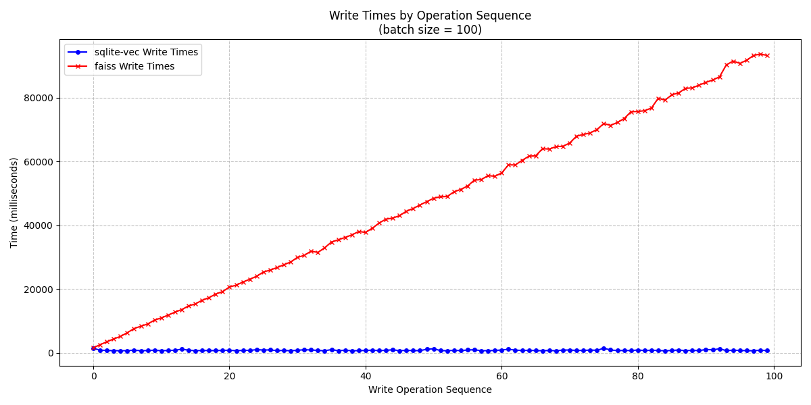
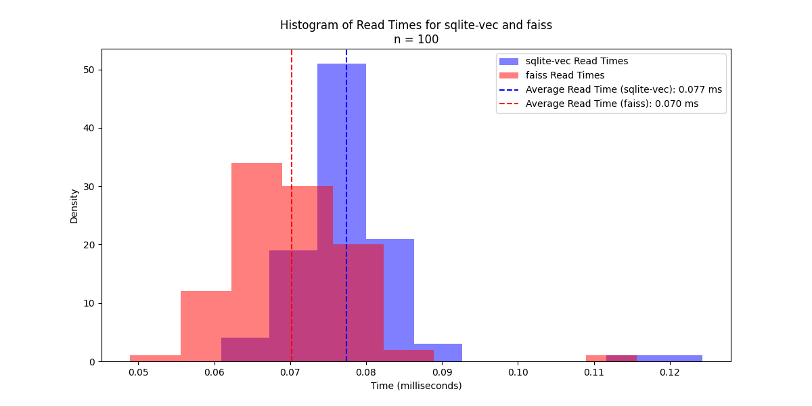

SQLite-Vec
SQLite-Vec is an inline vector database provider for Llama Stack. It allows you to store and query vectors directly within an SQLite database. That means you’re not limited to storing vectors in memory or in a separate service.
Features
Lightweight and easy to use
Fully integrated with Llama Stacks
Uses disk-based storage for persistence, allowing for larger vector storage
Comparison to Faiss
The choice between Faiss and sqlite-vec should be made based on the needs of your application, as they have different strengths.
Choosing the Right Provider
Scenario |
Recommended Tool |
Reason |
|---|---|---|
Online Analytical Processing (OLAP) |
Faiss |
Fast, in-memory searches |
Online Transaction Processing (OLTP) |
sqlite-vec |
Frequent writes and reads |
Frequent writes |
sqlite-vec |
Efficient disk-based storage and incremental indexing |
Large datasets |
sqlite-vec |
Disk-based storage for larger vector storage |
Datasets that can fit in memory, frequent reads |
Faiss |
Optimized for speed, indexing, and GPU acceleration |
Empirical Example
Consider the histogram below in which 10,000 randomly generated strings were inserted
in batches of 100 into both Faiss and sqlite-vec using client.tool_runtime.rag_tool.insert().
{kind=link}
You will notice that the average write time for sqlite-vec was 788ms, compared to
47,640ms for Faiss. While the number is jarring, if you look at the distribution, you can see that it is rather
uniformly spread across the [1500, 100000] interval.
Looking at each individual write in the order that the documents are inserted you’ll see the increase in write speed as Faiss reindexes the vectors after each write.
{kind=link}
In comparison, the read times for Faiss was on average 10% faster than sqlite-vec. The modes of the two distributions highlight the differences much further where Faiss will likely yield faster read performance.
{kind=link}
Usage
To use sqlite-vec in your Llama Stack project, follow these steps:
Install the necessary dependencies.
Configure your Llama Stack project to use SQLite-Vec.
Start storing and querying vectors.
The SQLite-vec provider supports three search modes:
Vector Search (
mode="vector"): Performs pure vector similarity search using the embeddings.Keyword Search (
mode="keyword"): Performs full-text search using SQLite’s FTS5.Hybrid Search (
mode="hybrid"): Combines both vector and keyword search for better results. First performs keyword search to get candidate matches, then applies vector similarity search on those candidates.
Example with hybrid search:
response = await vector_io.query_chunks(
vector_db_id="my_db",
query="your query here",
params={"mode": "hybrid", "max_chunks": 3, "score_threshold": 0.7},
)
# Using RRF ranker
response = await vector_io.query_chunks(
vector_db_id="my_db",
query="your query here",
params={
"mode": "hybrid",
"max_chunks": 3,
"score_threshold": 0.7,
"ranker": {"type": "rrf", "impact_factor": 60.0},
},
)
# Using weighted ranker
response = await vector_io.query_chunks(
vector_db_id="my_db",
query="your query here",
params={
"mode": "hybrid",
"max_chunks": 3,
"score_threshold": 0.7,
"ranker": {"type": "weighted", "alpha": 0.7}, # 70% vector, 30% keyword
},
)
Example with explicit vector search:
response = await vector_io.query_chunks(
vector_db_id="my_db",
query="your query here",
params={"mode": "vector", "max_chunks": 3, "score_threshold": 0.7},
)
Example with keyword search:
response = await vector_io.query_chunks(
vector_db_id="my_db",
query="your query here",
params={"mode": "keyword", "max_chunks": 3, "score_threshold": 0.7},
)
Supported Search Modes
The SQLite vector store supports three search modes:
Vector Search (
mode="vector"): Uses vector similarity to find relevant chunksKeyword Search (
mode="keyword"): Uses keyword matching to find relevant chunksHybrid Search (
mode="hybrid"): Combines both vector and keyword scores using a ranker
Hybrid Search
Hybrid search combines the strengths of both vector and keyword search by:
Computing vector similarity scores
Computing keyword match scores
Using a ranker to combine these scores
Two ranker types are supported:
RRF (Reciprocal Rank Fusion):
Combines ranks from both vector and keyword results
Uses an impact factor (default: 60.0) to control the weight of higher-ranked results
Good for balancing between vector and keyword results
The default impact factor of 60.0 comes from the original RRF paper by Cormack et al. (2009) [1], which found this value to provide optimal performance across various retrieval tasks
Weighted:
Linearly combines normalized vector and keyword scores
Uses an alpha parameter (0-1) to control the blend:
alpha=0: Only use keyword scores
alpha=1: Only use vector scores
alpha=0.5: Equal weight to both (default)
Example using RAGQueryConfig with different search modes:
from llama_stack.apis.tools import RAGQueryConfig, RRFRanker, WeightedRanker
# Vector search
config = RAGQueryConfig(mode="vector", max_chunks=5)
# Keyword search
config = RAGQueryConfig(mode="keyword", max_chunks=5)
# Hybrid search with custom RRF ranker
config = RAGQueryConfig(
mode="hybrid",
max_chunks=5,
ranker=RRFRanker(impact_factor=50.0), # Custom impact factor
)
# Hybrid search with weighted ranker
config = RAGQueryConfig(
mode="hybrid",
max_chunks=5,
ranker=WeightedRanker(alpha=0.7), # 70% vector, 30% keyword
)
# Hybrid search with default RRF ranker
config = RAGQueryConfig(
mode="hybrid", max_chunks=5
) # Will use RRF with impact_factor=60.0
Note: The ranker configuration is only used in hybrid mode. For vector or keyword modes, the ranker parameter is ignored.
Installation
You can install SQLite-Vec using pip:
pip install sqlite-vec
Documentation
See sqlite-vec’s GitHub repo for more details about sqlite-vec in general.